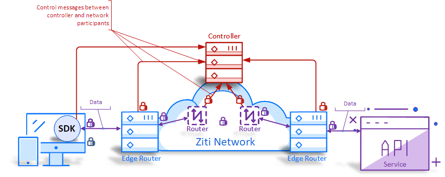

Overview
Why Ziti?
Ziti represents the next generation of secure networking for your applications and has arrived with the Ziti platform, created by NetFoundry, Inc ! The Ziti Controller and the Ziti Edge Router combine to form a secure, Zero Trust entry point into your network or as a secure zero-trust proxy to other hosted services.
Getting started with Ziti
If you are looking to jump right in feet first you can follow along with one of our up-and-running quickstart guides. The quickstart will leverage Amazon Web Services (AWS) and will have you launch an AMI which will get you up and running in no time.
This environment is perfect for evaluators to get to know Ziti and the capabilities it offers. The environement was not designed for large scale deployment or for long-term usage. If you are looking for a managed service to help you run a truly global, scalable network browse over to our website at http://netfoundry.io to learn more.
Overview of a Ziti Network
The Ziti Network (Ziti) is composed of the following building blocks: Ziti Controller, Ziti Router, Ziti Edge Router, Ziti Edge Clients. These components are used in conjunction to provide secure connectivity between two points such as a client to a server. This type of network is considered an overlay network because it provides secure connectivity on top – or “overlaying” – existing networking infrastructure.
Here's an overview of a network: 
ZITI CONTROLLER
The NetFoundry Ziti Controller is the central function of the NetFoundry Ziti Network. The Ziti Controller provides the configuration plane. It is responsible for configuring Ziti services as well as being the central point for managing the identities used by users, devices and the nodes making up the Ziti Network. Lastly but critically, the Ziti Controller is responsible for authentication and authorization for every connection in the Ziti network.
The Ziti Controller must be configured with public key infrastructure (pki). The configured pki is used to create secure, mutually authenticated TLS (mTLS) network connections between any two pieces of the Ziti Network. The Ziti Controller does not provide its own pki but for the Ziti Controller to sign certificate requests (CSR) the Ziti Controller will need to be configured with a key and certificate used for signing. (Optionally, the Ziti CLI can be used to generate a pki if needed)
The Ziti Controller also supports using a third-party pki should the operator of the Ziti Network have an existing pki they wish to reuse. Utilizing a third-party CA pushes the burden of obtaining and distributing properly signed certificates to the operator of the Ziti network but for sophisticated customers this might make overall management of the network easier. The Ziti Controller uses an out of process database (Postgres) to store the information needed to manage the network.
ZITI FABRIC ROUTER
Ziti Fabric Routers are the fundamental building blocks of the Ziti Network. These routers are responsible for securely and reliably delivering traffic from one Ziti Network node to the traffic’s destination.
Ziti Fabric Routers are linked together to form a mesh network. This mesh is constantly being monitored for latency and the fastest paths are used when routing traffic to the destination. The monitoring also allows for active failover to ensure a reliable network connection even in the case of a node failure.
ZITI EDGE ROUTER
Another fundamental building block of the Ziti Network is the Ziti Edge Router. The Ziti Edge Router is the entry point for Edge Clients connecting to the Ziti Network. The Ziti Edge Router is a specialized Ziti Router incorporating the functionality of a Ziti Router to enable it to route traffic over the Ziti network as a Ziti Router would to a given destination.
The Ziti Edge Router in combination with the Ziti Controller is responsible for authenticating and authorizing Ziti Edge Clients.
ZITI EDGE CLIENTS
Connecting to the Ziti Network requires a Ziti Edge Client. Edge Clients are designed to work with both brownfield and greenfield applications.
If the solution being developed includes developing new software NetFoundry offers SDKs targeting various languages and runtimes to provide fast, reliable and secure connectivity. These SDKs provide the capabilities needed to securely connect to the Ziti Network and are designed to be easily incorporated into the target application.
When adding secure connectivity to an already existing solution NetFoundry offers specialized Edge Clients called tunnelers which provide seamless, secure connectivity and do not require changes to the target application.
USING ZITI
Once the Ziti Network is established and deployed the next step is to configure the software-powered network. The three main concepts necessary to configure a Ziti Network are: Identities, Services, and AppWANs.
SERVICES
A service encapsulates the definition of any resource that could be accessed by a client on a traditional network. A Ziti Service is defined by a strong, extensible identity, rather than by an expression of an underlay concept. This means that services defined on a Ziti Network have an almost limitless "namespace" available for identifying services. A Ziti Service is defined by a name and/or a certificate, rather than by a DNS name or an IP address (underlay concepts). Services also declare a node where traffic that exits the Ziti Network needs to be sent do before exiting. It’s possible for the node traffic enters to be the same it exits and it’s possible for traffic needing to traverse the Ziti Network Routers to reach the correct node. Simply specifying the node is all the end-user need do, the Ziti Network handles the rest.
IDENTITIES
Identities represent individual endpoints in the Ziti Network which can establish connectivity. All connections made within the Ziti Network are mutually authenticated using X509 Certificates. Every Identity is mapped to a given certificate’s signature. Ziti Edge Clients present this certificate when initiating connections to the Ziti Network. The presented certificate is used by the Ziti Network to authorize the client and enumerate the services the Identity is authorized to use.
AppWAN
The AppWAN is concept created to encapsulate the mapping between services and identities in a software-powered network. In the simplest terms, AppWANs are a group of services and a group of identities. The act of adding a service to an AppWAN will grant the identities in that AppWAN access to the given service. Similarly adding an identity to an AppWAN will grant that identity access to the services mapped in that AppWAN.